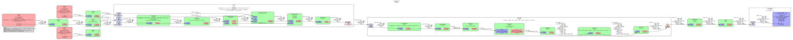

SMPTE 2022-1 2D Forward Error Correction in GStreamer
Various mechanisms have been devised over the years for recovering from packet loss when transporting data with RTP over UDP. One such mechanism was standardized in SMPTE 2022-1, and I recently implemented support for it in GStreamer.
TL;DR:
gst-launch-1.0 \
rtpbin name=rtp fec-encoders='fec,0="rtpst2022-1-fecenc\ rows\=5\ columns\=5";' \
uridecodebin uri=file:///path/to/video/file ! x264enc key-int-max=60 tune=zerolatency ! \
queue ! mpegtsmux ! rtpmp2tpay ssrc=0 ! rtp.send_rtp_sink_0 \
rtp.send_rtp_src_0 ! udpsink host=127.0.0.1 port=5000 \
rtp.send_fec_src_0_0 ! udpsink host=127.0.0.1 port=5002 async=false \
rtp.send_fec_src_0_1 ! udpsink host=127.0.0.1 port=5004 async=false
gst-launch-1.0 \
rtpbin latency=500 fec-decoders='fec,0="rtpst2022-1-fecdec\ size-time\=1000000000";' name=rtp \
udpsrc address=127.0.0.1 port=5002 caps="application/x-rtp, payload=96" ! queue ! rtp.recv_fec_sink_0_0 \
udpsrc address=127.0.0.1 port=5004 caps="application/x-rtp, payload=96" ! queue ! rtp.recv_fec_sink_0_1 \
udpsrc address=127.0.0.1 port=5000 caps="application/x-rtp, media=video, clock-rate=90000, encoding-name=mp2t, payload=33" ! \
queue ! netsim drop-probability=0.05 ! rtp.recv_rtp_sink_0 \
rtp. ! decodebin ! videoconvert ! queue ! autovideosink
Specification
SMPTE 2022
From Wikipedia:
SMPTE 2022 is a standard from the Society of Motion Picture and Television Engineers (SMPTE) that describes how to send digital video over an IP network. Video formats supported include MPEG-2 and serial digital interface. The standard was introduced in 2007 and has been expanded in the years since.
The work presented in this post is the implementation of the first part of that standard, 2022-1. 2022-5 is another notable part dealing with Forward Error Correction for very high bitrate RTP streams.
XOR
The core mechanism at the heart of SMPTE 2022-1 and other FEC mechanisms is
usage of XOR (^). Given a set of N values, it is possible to recover any
of the values provided all the other values and the result of their xoring
together have been received.
It is logically equivalent and probably easier to think of to retrieving the missing value when the sum of all the values has been received, for example given 3 values 1, 2 and X, and their sum 6, we can see that X must be:
X = 6 - 2 - 1
X = 3
Usage of XOR is a neat trick that makes for a more computer-friendly mechanism: while an addition-based mechanism would require 9-bit to protect two 8-bit values, 10-bit to protect 4, etc., the required size with XOR remains a constant 8-bit.
An RTP payload is just a collection of 8-bit values, so it follows that the payload of FEC packets protecting N RTP packets consists of an equivalent amount of 8-bit values.
Other fields of the standard RTP header are protected similarly, such as the payload type or the timestamp, and the payload length of the media packets as well, allowing the mechanism to be applied to media packets of varying lengths.
Enter the (2D) matrix
A straightforward application of the mechanism presented above is to simply construct and transmit a FEC packet for each set of N consecutive media packets.
This works well enough when packet loss is truly random, but a common pattern of packet loss over UDP is burstiness, where packets may be transmitted without loss for some time, then suddenly a few consecutive packets go missing. It means that our mechanism will often fall short in such cases, as it relies on having at most one packet missing from a sequence of values.
A neat sophistication introduced in this standard and adopted in 2022-5 and flexfec is to think of packet sequences with an extra dimension, going from a linear approach:
M1 M2 M3 RF1 M4 M5 M6 RF2 ...
to a two-dimensional approach:
+--------------+
| M1 | M2 | M3 | RF1
| M4 | M5 | M6 | RF2
| M7 | M8 | M9 | RF3
+--------------+
CF1 CF2 CF3
Where M are the protected media packets, RF are the "row" FEC packets, applied to consecutive packets, and CF are the "column" FEC packets, applied to sets of packets separated by a fixed interval, in the example above 3.
Let's imagine some scenarios to see how this approach addresses bursty loss patterns:
If M2 and M9 are lost:
+--------------+
| M1 | X | M3 | RF1
| M4 | M5 | M6 | RF2
| M7 | M8 | X | RF3
+--------------+
CF1 CF2 CF3
They can both be recovered thanks to row FEC (RF1, RF3), but if M2 and M3 are lost in a burst, row FEC is now useless:
+--------------+
| M1 | X | X | RF1
| M4 | M5 | M6 | RF2
| M7 | M8 | M9 | RF3
+--------------+
CF1 CF2 CF3
That is where column FEC comes in handy, as M2 and M3 can still be recovered thanks to CF2 and CF3.
An interesting property of this scheme is that each dimension can complete the other:
+--------------+
| M1 | M2 | X | X
| M4 | M5 | X | RF2
| M7 | X | X | RF3
+--------------+
CF1 CF2 CF3
It appears that we have some heavy packet loss, and that some packets may simply not be recovered, for example M3 has its row FEC packet missing, and none of the media packets in its column have made it.
However all hope is not lost:
We first recover M8 thanks to column FEC, which means we can now recover M9 with row FEC. M6 is also recoverable with row FEC: M3 can now be recovered through column FEC! That's pretty neat.
As with many other "vague" problems, there isn't necessarily a perfect dimension for the matrix, it has to be determined empirically through trial and error, and potentially adapted depending on the particular network that data will be transported across.
For reference, AWS MediaConnect uses a 10 by 10 matrix, and in my testing with
the netsim element, a 5 by 5 matrix worked well to address a 5 percent packet
loss. netsim isn't however a faithful representation of a typical unreliable
network, as when using its drop-probability property packets will be randomly
dropped.
Repair window
As the intention behind column FEC is to recover from loss bursts, it would be counter-productive to send those FEC packets at the same time as the media packets they protect. SMPTE 2022-1 addresses this by specifying how to delay these packets, this is known in latter specs as the "Repair window".
Limitations
SMPTE 2022-1 requires FEC packets to have their SSRC field to zero, this makes multiplexing of multiple FEC streams impossible. As a consequence, it is often used with an MPEG-TS container, but nothing prevents from using it with other types of payload. SMPTE 2022-1 also prohibits usage of CSRC entries.
The maximum size of the 2D FEC matrix is limited to 255 by 255. This is of course more than sufficient for compressed formats, but too limiting for raw formats. SMPTE 2022-5 addresses this by turning the row and column fields into 10-bit values, making it suitable for usage with very high bandwidth formats (> 3 Gbps).
Implementation
Positioning in rtpbin
The decoder element is positioned upstream of rtpjitterbuffer in GStreamer's rtpbin. It exposes one always sinkpad for receiving media packets, and up to two request sink pads for receiving FEC packets.

All incoming packets are stored for the duration of a configurable repair
window (size-time property).
My initial approach was to perform recovery upon retransmission requests
emitted by rtpjitterbuffer, but this approach had multiple drawbacks:
-
do-retransmissionhad to be set on the jitterbuffer, which would have been confusing when retransmission was not actually required. -
rtpjitterbufferwill emit retransmission requests pretty agressively, and potentially multiple times for the same packet. This would have caused unnecessary processing in the decoder.
Instead, the approach I picked was to proactively reconstruct missing packets as soon as possible. When a FEC packet arrives, we immediately check whether a media packet in the row / column it protects can be reconstructed.
Similarly, when a media packet comes in, we check whether we've already received a corresponding packet in both the column and row it belongs to, and if so go through the first step listed above.
This process is repeated recursively, allowing for recoveries over one dimension to unblock recoveries over the other.
The encoder exposes one sink pad, one always source pad, and two sometimes source pads for pushing FEC packets. It is placed near the tail of rtpbin.
Configuration options
The only property exposed by the decoder is, as mentioned above, the duration for which to store packets, which should be at least as long as the repair window.
The encoder on the other hand is a bit more configurable, with properties
to set the size of the repair matrix that cannot be changed while PLAYING,
and properties to selectively disable row or column FEC while PLAYING,
allowing applications to adapt their packet loss / bandwidth usage strategy
dynamically, based on evolving network conditions.
Finally, properties have been added in rtpbin to allow specifying a per-session element factory for sending and receiving FEC from the command line. These come as a complement to the already existing signals, which are still used as a fallback.
Usage
The following pipelines put all this work together, with a sender side that can be started with:
gst-launch-1.0 \
rtpbin name=rtp fec-encoders='fec,0="rtpst2022-1-fecenc\ rows\=5\ columns\=5";' \
uridecodebin uri=file:///path/to/video/file ! x264enc key-int-max=60 tune=zerolatency ! \
queue ! mpegtsmux ! rtpmp2tpay ssrc=0 ! rtp.send_rtp_sink_0 \
rtp.send_rtp_src_0 ! udpsink host=127.0.0.1 port=5000 \
rtp.send_fec_src_0_0 ! udpsink host=127.0.0.1 port=5002 async=false \
rtp.send_fec_src_0_1 ! udpsink host=127.0.0.1 port=5004 async=false
and a receiver side with:
gst-launch-1.0 \
rtpbin latency=500 fec-decoders='fec,0="rtpst2022-1-fecdec\ size-time\=1000000000";' name=rtp \
udpsrc address=127.0.0.1 port=5002 caps="application/x-rtp, payload=96" ! queue ! rtp.recv_fec_sink_0_0 \
udpsrc address=127.0.0.1 port=5004 caps="application/x-rtp, payload=96" ! queue ! rtp.recv_fec_sink_0_1 \
udpsrc address=127.0.0.1 port=5000 caps="application/x-rtp, media=video, clock-rate=90000, encoding-name=mp2t, payload=33" ! \
queue ! netsim drop-probability=0.05 ! rtp.recv_rtp_sink_0 \
rtp. ! decodebin ! videoconvert ! queue ! autovideosink
Future prospects
More FEC!
Algorithmically-speaking, SMPTE 2022-1 is similar to flexfec. While it is based on RFC 2733, flexfec is based on RFC 5109 and lifts some of the constraints I listed earlier. Flexfec is not yet a final RFC, but it can already be used as a webRTC protection mechanism with Google Chrome, and should eventually obsolete ulpfec.
If you are interested in building upon my work to implement flexfec or SMPTE 2022-5 support in GStreamer, or are willing to sponsor me for doing so, don't hesitate to shoot me a mail at mathieu@centricular.com!
Network-aware heuristics
Adapting configuration and usage of the various packet loss recovery / mitigation mechanisms is a hard problem in and of itself, and GStreamer currently leaves this as an exercise to the reader. We are gathering all the pieces of the puzzle however:
-
Retransmission has been supported for quite some time already (courtesy of Julien Isorce, then working at Collabora)
-
Support for Transport Wide Congestion Control has been merged recently (courtesy of Havard Graff at Pexip)
-
Various mechanisms are available for Forward Error Correction
-
rtpbincollects all sorts of statistics giving us a clear picture of current network conditions -
Many of our encoders support dynamically changing their bitrate
Designing and implementing a solution for tying all these features together would be a very interesting undertaking, and make for a more enjoyable out-of-the-box RTP experience.
I hope this was instructive, curious about comments / corrections (I don't give hexadecimal dollars, I'd get bankrupt real quick).
The results of the search are